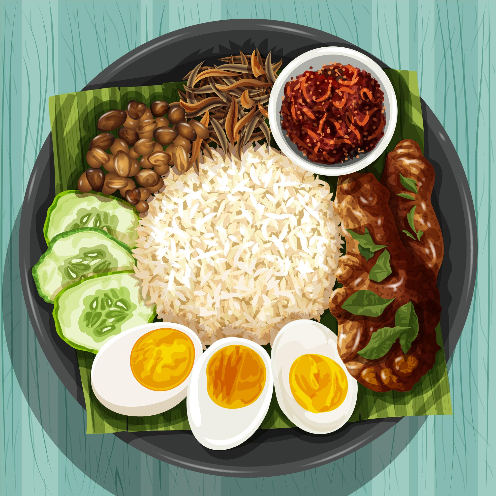

Soy Omelette With Crispy Rice

Description
The aim of this dish is to be as crispy as possible
Ingredients
- Eggs
- Cooked Sushi Rice
- Cashew Nuts
- Soy Sauce
Method
- Add cooked sushi rice to sesame oil in a wok until crispy
- Cook a basic Omelette with a little soy sauce added
- Combine, with cashew nuts for crunch.